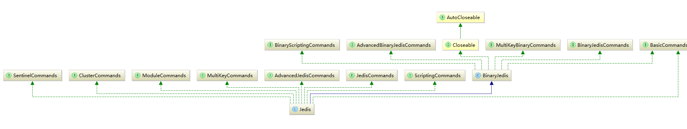
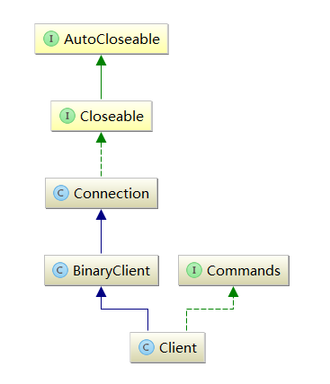

Jedis 简单使用
pom 中增加如下依赖：
<dependency> |
简单使用：
Jedis jedis = new Jedis("10.148.21.177", 6379); |
Jedis 的简单源码分析

public class Jedis extends BinaryJedis implements JedisCommands, MultiKeyCommands, |
Jedis 继承自 BinaryJedis 同时实现了一系列的 Commands 接口，BinaryJedis 里主要和 Redis Server 进行交互，一系列Commands接口主要是对redis支持的接口进行分类，像BasicCommands主要包含了info、flush等操作，BinaryJedisCommands 主要包含了get、set等操作，MultiKeyBinaryCommands主要包含了一些批量操作的接口例如mset等。
以上面简单的 Jedis 的 set 方法为例来分析 Jedis 的源码实现。
首先看 Jedis 的实例化：
public Jedis(final String host, final int port) { |
BinaryJedis 里持有了一个 Client 的引用，可以将 BinaryJedis 视为 Client 的一个代理。
Client 的继承结构如下：

Client 继承了 BinaryClient，BinaryClient 继承了 Connection，实现了 Commands 接口。Client 主要做了一些编解码的工作，BinaryClient 做了 Command 的发送操作，而所有与 Redis Server交互的工作由Connection完成。
首先看 Jedis 中的 set 方法：
public String set(final String key, final String value) { |
这里委托了个 Client 进行处理：
@Override |
这里调用了 BinaryClient 里的 set 方法：
public void set(final byte[] key, final byte[] value) { |
这里调用了 Connection 中的 sendCommand 方法：
public void sendCommand(final ProtocolCommand cmd, final byte[]... args) { |
这段代码中首先调用了 connect 方法与 Redis 进行连接：
public void connect() { |
主要是通过 Socket 通信来实现命令的发送。这里实例化了 RedisOutputStream 和 RedisInputStream 两个输入和输出流，主要用于命令的发送和响应的接收。
在每一次进行query的时候都会调用connect方法来保证之前连接失效之后能新建连接并操作成功。
回到 sendCommand 中，在调用完 connect 方法之后，调用了 Protocol 中的 sendCommand 方法：
public static void sendCommand(final RedisOutputStream os, final ProtocolCommand command, |
这里利用了Protocol提供的一些请求头来构造一个请求。具体的协议内容就不细解析了，发送完请求之后返回。
回到 Jedis 中的 set 方法，继续调用 Client 的 getStatusCodeReply 方法获取返回响应，代码位于父类 Connection 中：
public String getStatusCodeReply() { |
首先调用了 flush 方法，保证之前的写入能发送出去，之后调用了 readProtocolWithCheckingBroken 来获取响应。
protected Object readProtocolWithCheckingBroken() { |
调用 Protocol.read 进行对 RedisInputStream 进行读取，在这过程中可能会抛出连接异常。
public static Object read(final RedisInputStream is) { |
最后在read的时候对返回的响应进行了判断，枚举出了几种响应方式，对不同的响应进行不同的处理。
这里可以看出，整个交互过程就是一个Socket通信过程。按照一定的协议发送请求，之后读取返回结果。但是这里也有一个问题就是线程安全问题，显然Jedis实例是线程不安全的，对于多线程共享jedis实例是会有问题的。同时直接使用jedis不能避免的需要反复的创建和销毁Socket，开销很大。所以就引出了后面的jedisPool的使用。
JedisPool 的使用与实现
JedisPool是Jedis提供的一种对Redis的连接池，利用连接池可以很好的对Jedis的连接做一个很好的掌控，能避免创建和销毁的开销，同时可以进行定期的保活，能避免反复的创建连接。
下面是一个JedisPool例子：
JedisPoolConfig config = new JedisPoolConfig(); |
可以看到新创建了一个 JedisPoolConfig ，用于对 JedisPool 的配置。这里没有使用之前 JedisPool 的 returnResource ，该方法已经被标记为废弃，因为 jedis.close() 已经做了相关的 returnResource 方法。
|
我们先看一下JedisPoolConfig是什么：
public class JedisPoolConfig extends GenericObjectPoolConfig { |
JedisPoolConfig 继承了 GenericObjectPoolConfig ， GenericObjectPoolConfig 是 Apache Commons Pool 项目提供的一个对象池配置。GenericObjectPoolConfig 提供了很多参数，我们可以使用 JedisPoolConfig 也可以使用 GenericObjectPoolConfig 。
JedisPool 的实例化过程：
public JedisPool(String host, int port) { |
JedisPool 的构造方法有很多，满足不同初始化参数的情况，最终执行的构造方法中，创建了一个 JedisFactory 实例，这个工厂十分关键，它实现了 commons-pool 中的 PooledObjectFactory 接口，所有对象的创建、销毁、激活和有效性校验都是在 JedisFactory 中进行的。
class JedisFactory implements PooledObjectFactory<Jedis> { |
PooledObjectFactory 提供了很多的方法：
public interface PooledObjectFactory<T> { |
在创建好了 JedisPool 之后呢，在使用的时候调用 getResource 来获取 jedis 的客户端：
|
JedisPool 继承自 JedisPoolAbstract ，而 JedisPoolAbstract 继承自 Pool 。
Pool 持有了一个 GenericObjectPool 的引用：
public abstract class Pool<T> implements Closeable { |
internalPool 在 Pool 的构造方法中被创建：
public Pool(final GenericObjectPoolConfig poolConfig, PooledObjectFactory<T> factory) { |
创建时使用了 JedisPool 构造方法中传入的 GenericObjectPoolConfig 和 JedisFactory 实例。
JedisPool 在调用 getResource 方法时，最终会调用到 Pool 中的 getResource 方法，进而调用持有的 GenericObjectPool 引用的 borrowObject 方法。
同时，在 JedisPool 的 getResource 方法中，还会将自己的引用交给获取的到 Jedis 实例，便于在 close 的时候进行对象的返还。
Jedis 的分片
对于单实例的 Redis 的使用，我们可以用 Jedis ，并发环境下我们可以用 JedisPool 。但是这两种方法是针对于单实例的 Redis 的情况下使用的，但是有时候我们的业务可能不是单实例 Redis 能支撑的，那么我们这时候需要引入多个实例进行“数据分区”。其实好多人都说，用 Redis 集群不就搞定了吗？但是 Redis 集群无论部署还是维护成本都比较高，对于一些业务来说，使用起来还是成本很高。所以，对我们来说更好的方案可能是在客户端实现对数据的手动分区.
数据分区就是 Shard ，其实 Redis 已经对 Shard 有很好的支持了。接下来简单的看一下数据分片的使用：
package redis.clients.jedis.tests; |
运行结果如下：
test0:127.0.0.1:6382 |
其实 Shard 使用起来很简单，接下来我们看看 ShardedJedisPool 的具体的实现。
首先在初始化 ShardedJedisPool 的时候我们需要创建一个 JedisShardInfo 实例， JedisShardInfo 主要是对单个连接的相关配置：
public class JedisShardInfo extends ShardInfo<Jedis> { |
同时还需要进行 JedisPoolConfig 的设置，可以猜到 ShardedJedisPool 也是基于 commons-pool 来实现的。
看一下 ShardedJedisPool 的构造方法：
public class ShardedJedisPool extends Pool<ShardedJedis> { |
多个重载的构造方法中最终会创建一个 ShardedJedisFactory 实例。 ShardedJedisFactory 继承自 PooledObjectFactory ，与 JedisFactory 功能一样，用于管理 Pool 中的对象， makeObject 方法中会创建一个 ShardedJedis 实例。
ShardedJedis 功能与 Jedis 类似，继承关系也类似，只是代表了分片时的情况。看一下 ShardedJedis 的构造方法：
public class ShardedJedis extends BinaryShardedJedis implements JedisCommands, Closeable { |
同 Jedis 一样，持有了一个连接池的引用，便于 close 时进行资源的回收。构造方法中层层调用了父类的构造方法，最终进入 Sharded 的构造方法：
public Sharded(List<S> shards, Hashing algo, Pattern tagPattern) { |
algo 就是从一开始 ShardedJedisPool 层层传入的 Hasing 实例，表示哈希算法，默认使用了 MURMUR_HASH 算法。
tagPattern 同样是从 ShardedJedisPool 中传入的 Pattern 实例，这个参数默认为空，如果设置了，可以只使用 key 中符合 Pattern 的那部分参与哈希计算。
initialize 方法中根据分片信息构造具体的 Jedis 实例，放入了 TreeMap 中。这段代码实现了一致性哈希的算法，可以参考其他文章，这里不具体分析了。
至此就完成了 ShardedJedisPool 的构建。
在 ShardedJedis 使用时，其 get 或 set 方法首先会调用 getShard 方法获取分片：
public R getShard(String key) { |
最终根据哈希算法从 TreeMap 中获取一个 Jedis 链接，然后再继续操作。
从上面的分析中可以看出，每一个ShardedJedis都维护了所有的分片，将多个实例当成一个整体去使用。而且，这种分片方式是静态、不可扩容的，只在初始时进行分片。